Beyond work
Interests and hobbies
What fills my time out of work.
On the water
I am a member of the Victoria University of Wellington dragon boat team, and we won gold at our most recent festival. There is nothing quite like paddling in time with a crew, and the post-race coffee & high-fives are the best part.
Books and photography
I love reading, and there is little I enjoy more than finishing a good book and finding someone to talk it over with. I am just as happy spending time in nature with a camera, photographing the landscapes of Aotearoa.
Travel
I love travelling, visiting new places, meeting new people and learning about different languages and cultures. I have travelled through most of Europe and parts of Asia and Oceania, and I hope to visit South America and see more of Asia.
In the kitchen
When I am not on the water, lost in a book or out in the wild, I am usually in the kitchen. I enjoy cooking and baking, and sharing food with colleagues and friends is one of my favourite ways to bring people together.
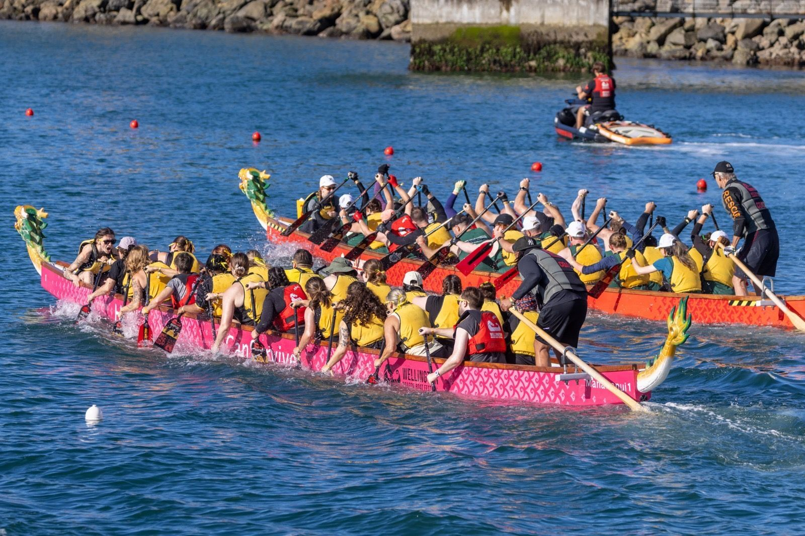
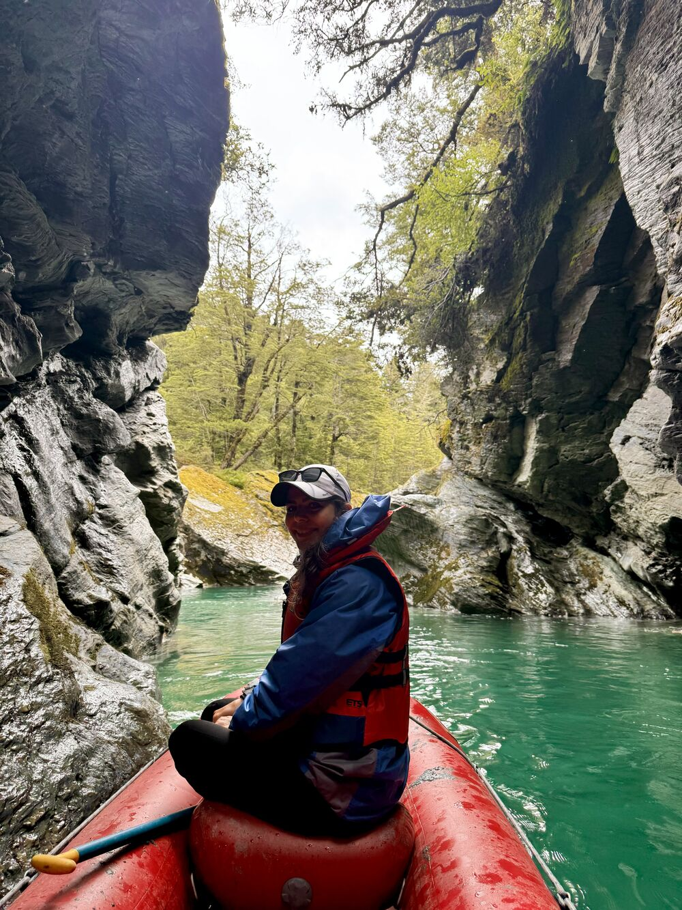
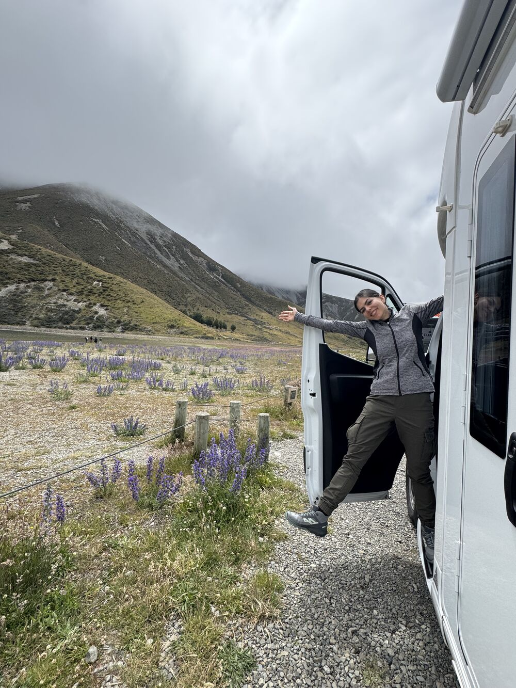
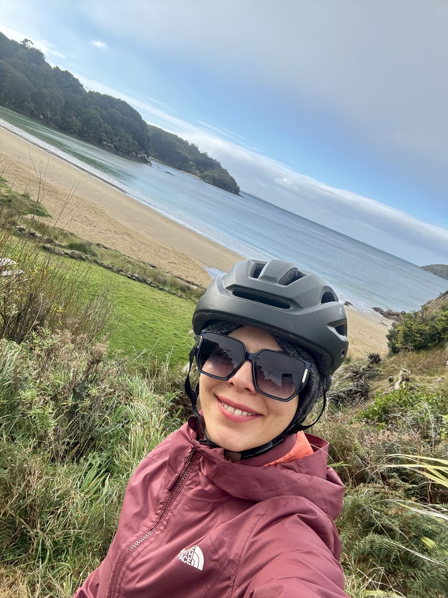
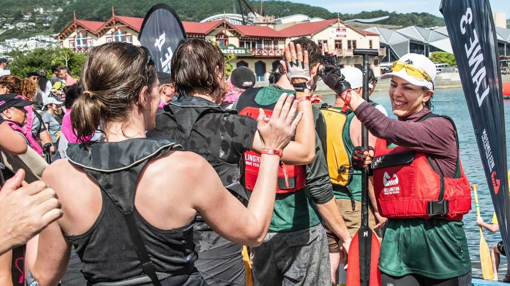
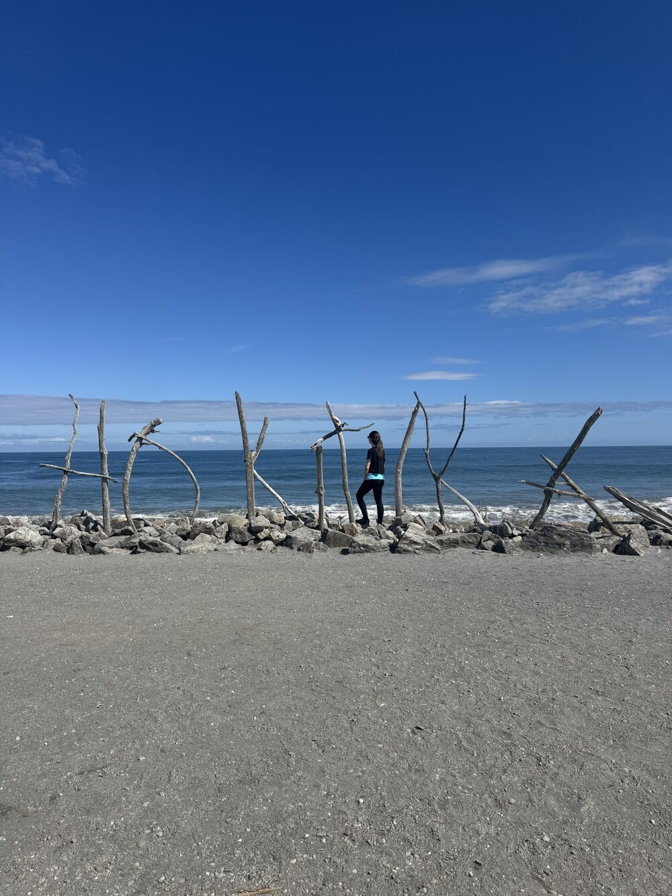
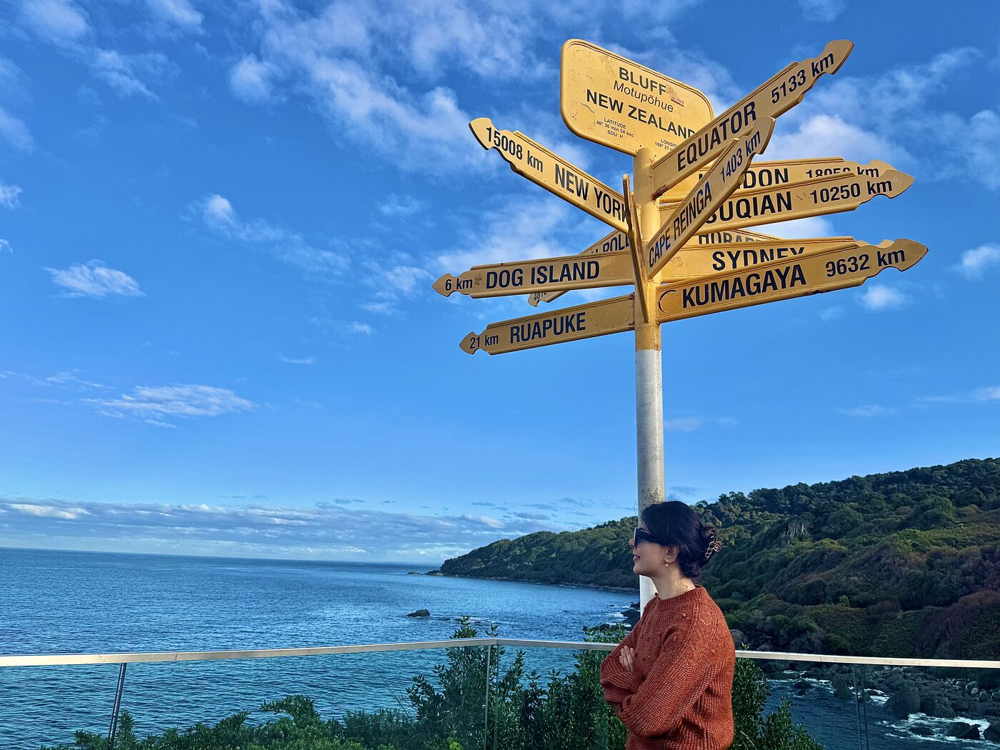
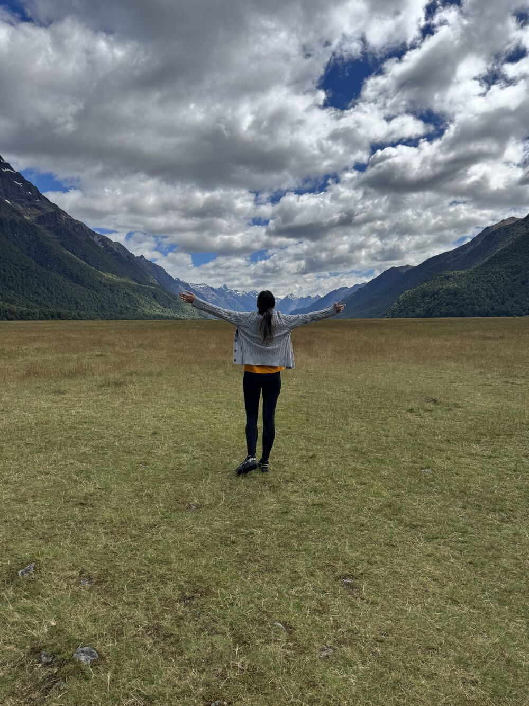
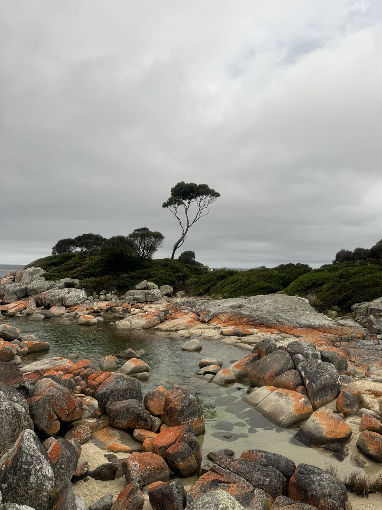
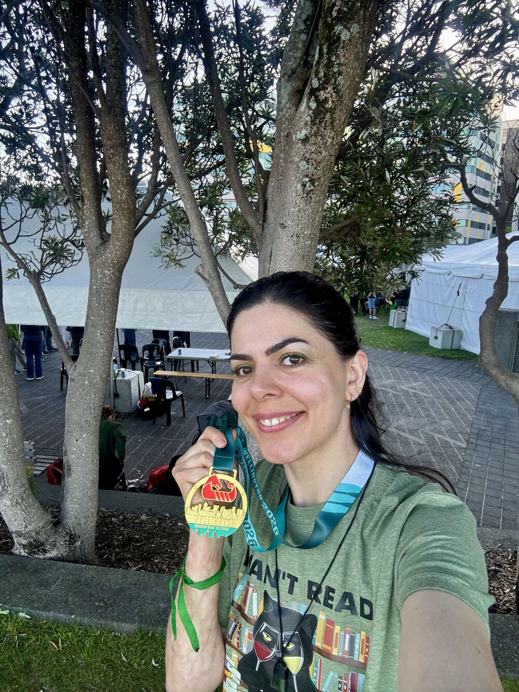
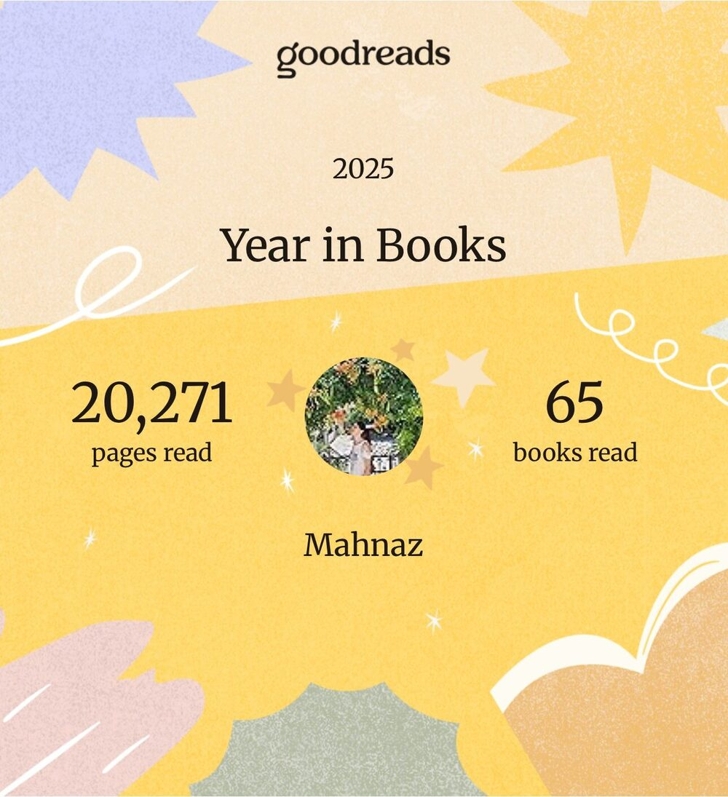
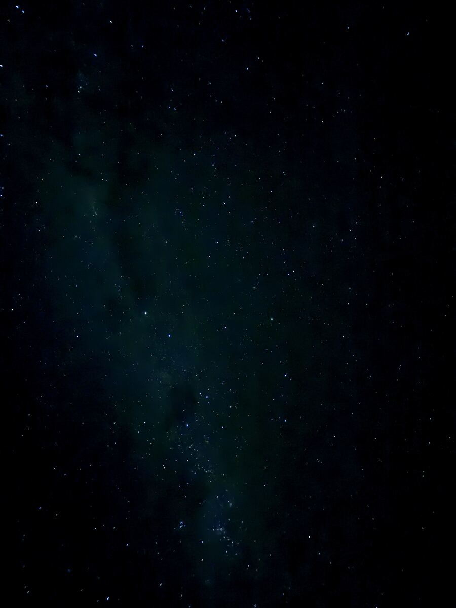
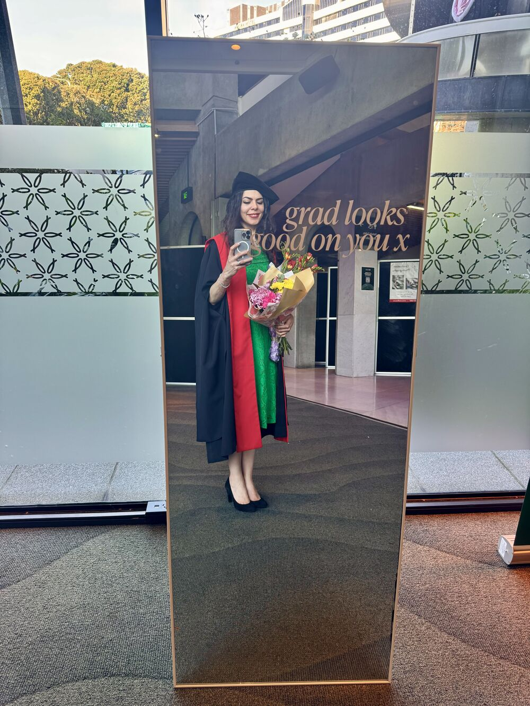